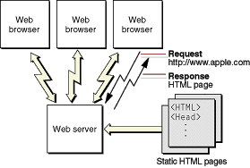
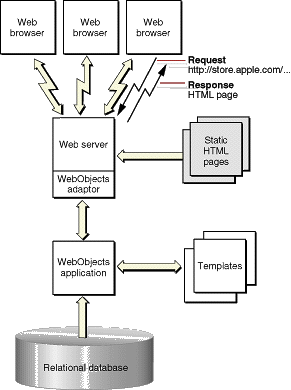

| PATH |

Much of the content on the Web is textual or graphical material that doesn't change much over time. However, there is increasing demand for sites that publish ever-changing data: breaking news stories, up-to-the-minute stock quotes, or the current weather are good examples.
A typical website is organized like Figure 2-1. A user's Web browser requests pages using URLs (Uniform Resource Locators). These requests are sent over the network to the Web server, which analyzes each request and selects the appropriate Web page to return to the user's browser. This Web page is simply a text file that contains HTML. Using the HTML tags embedded within the file received from the Web server, the browser renders the page.
Figure 2-1 A static publishing site
Static publishing sites are easy to maintain. There are a number of tools on the market that allow you to create HTML pages with a relatively small amount of effort, and as long as the page content doesn't change too often, it isn't that difficult to keep them up-to-date. Dynamic publishing sites, however, are a different story. Without WebObjects it could take a small army to keep a breaking news site up to date.
WebObjects was designed from the beginning to allow you to quickly and easily publish dynamic data over the Web. You create HTML templates that indicate where on the Web page the dynamic data is to be placed, and a WebObjects application fills in the content when your application is accessed. The process is much like a mail merge. The information your Web pages publish can reside in a database, it can reside in some other permanent data storage (files, perhaps), or it can even be calculated or generated at the time a page is accessed. The pages are also highly interactive-you can fully specify the way the user navigates through them.
Figure 2-2 shows a WebObjects-based dynamic publishing site. Again, the request (in the form of a URL) originates with a client browser. If the Web server detects that the request is to be handled by WebObjects, it passes the request to a WebObjects adaptor. The adaptor packages the incoming request in a form the WebObjects application can understand and forwards it to the application. Based upon templates you've defined and the relevant data from the data store, the application generates an HTML page that it passes back through the adaptor to the Web server. The Web server sends the page to the client browser, which renders it.
Figure 2-2 A dynamic publishing site
This type of WebObjects application is referred to as "HTML-based," since the result is a series of dynamically generated HTML pages.
© 2001 Apple Computer, Inc.